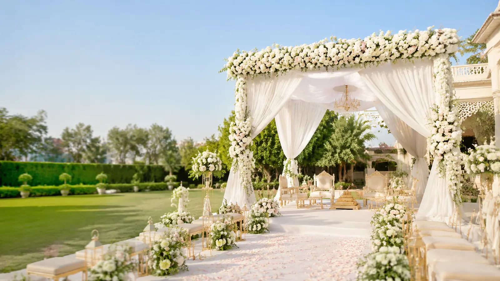

PLAN YOUR CELEBRATION · SELECT MY VENUE
Venue Booking Checklist: 9 Checks Before You Book
By Select My Venue · Updated 17 September 2026

A beautiful photograph is a starting point. A site visit and a clear written package help you decide whether a venue works for your guests and your budget.
0 of 9 checks complete
Tick these items as you check each venue. Your progress stays in this browser; no personal details are required.
Your venue visit checklist
Compare the same package
For a useful comparison, ask every venue for the same date, guest count and menu. Record the total rather than comparing only the advertised starting price.
Take photographs with permission, keep the written quote and discuss any uncertainty before making a payment.
Read the venue budget guide →Ready to explore your options?
Browse venue details, save favourites and compare your shortlist.
Explore venues ↗